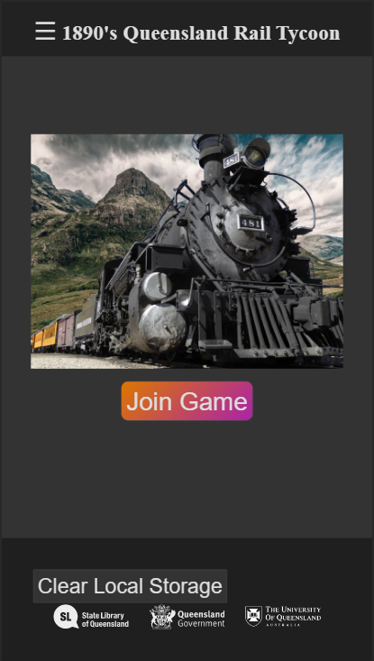
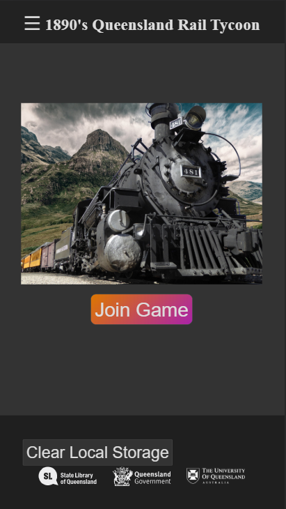

Bachelor of Engineering (Electrical)/ Bachelor of Science (Mathematics)
hello it me
Case Studies:
What should be in each case study?
**Evidence** of your individual contributions through a range of multimedia (text, photos, illustrations, video etc).
**How should I collect evidence?** Focusing on your individual contributions, you can collect evidence from your team's journal (for the team assessments) and by maintaining your own journal (for the individual assessments — including the development of your *Portfolio*. However, be selective on the quality of the evidence you include in your final *Portfolio* (i.e. quality over quantity).
**Discussions** of your individual design process — how you went from the initial idea to the finished product, the major changes along the way, methods of testing and receiving feedback etc.
**Why not discuss team design process too?** This is your opportunity to discuss your design process from an individual perspective — especially if that work does not appear in your team's final product.
**Reflections** on your individual efforts — whether you think the assessment was a success, which parts were not successful, how your learning has changed, whether your initial expectations were realistic etc.
**How do I know if my reflections are good enough?** To help you gauge whether your reflections are deep enough, ask your tutors to gauge the appropriateness of them throughout the semester.
Early Prototype
You will conceptualise and build a mobile web-based, interactive application to enhance the experience of visitors as they navigate a fictional museum/exhibition. The application will present data from the State Library of Queensland (SLQ) to provide an alternative, digital perspective on the exhibits in the museum/exhibition.
'Introduction to the Project Brief'
Throughout the first contact sessions I searched through the SLQ datasets and brainstormed ideas for projects with Connor, who later became a memeber of my group.
We eventually settled on the idea of creating a multiplayer game based on the railway employees dataset, however we each had different ideas of what this would look like. My initial idea from the rationale is shown below:
The concept is to create a collaborative experience in which a group of people reconstruct parts of Queensland’s railway network through a game-like interface. The activity will use data from the “Queensland railway employees 1890-1915” SLQ data set to populate the game with real workers and jobs from the period, including their wages and the reason they were hired.
The game will consist of a central display showing a model of the train line, with the names and funds of each participant visible. Each player will be allocated an income depending on the number of players and success of the railway, which they can spend to hire more staff, complete research, or contribute to construction projects.
Declan Wilkinson, 'Early Prototype Rationale'
The images below show the brainstorming in the contact session, as well as screenshots of my Invision prototype. The prototype can also be seen here.
Overall I was satisfied with the prototype produced, the only thing left out was the large screen to show the game progress. Much of the design from this prototype ended up very similar to the final delivery, so i would consider it very successful.
Work in Progress

Your team will demonstrate their partially implemented web-based application for in-class critique. Your team will demonstrate the key interactive/technical features of their website.
'Work in Progress Brief'
Once we were put into groups we quickly decided that the majority of coding would be done by myself, with Connor assuming the role of team leader, Laura the lead designer, and Sophie and Connor taking care of the documentation.
Partially due to this decision, the group decided to go forward with the multiplayer railway game concept that both Connor and myself presented in our early prototypes.
Using this concept, I began by creating individual pages to test each element of the project in isolation.
The pages presented as part of this demo were:
Player screen
Including working player creation using a database to store and retrieve user data, and displaying information about projects stored in the database.
Employee screen
This screen used SQL to query the SLQ dataset to find an employee matching the search term, then matched it with a picture using the Pixabay API.
Game screen
This page queried the database to display all players currently in the game, as well as all the projects the players could see.
News screen
This page was intended to be how game events and alerts were delivered to players. For the demo this page did not draw from any external sources.
At this point in the project, I was the only person contributing to the code of the site, as can be seen in the commit history here. In addition to the work I had completed before setting up a git repository, I made 15 commits before our WiP demo on 19/09. The train image on the game screen and some of the database structure are the only things shown in the screenshots above that are not my work.
The mark we received for the work in progress was 93% with the demo being marked as 'High Distinction - High'. Based on this result our demo was very successful, however I believe if the development was more equally shared the team would have a better understanding of the project and the report may have been of higher quality.
My contributions to the report were fairly minimal, consisting mostly of giving other team members points to include.
Around the time of the demo, I realised that the initial concept of a cooperative multiplayer game would require too much work to create an engaging experience so I decided to instead make the game competitive. After some discussion with tutors the new concept was to have players hire employees to complete projects and progress through the game, but also have the ability for players behind them to complete sabotage projects to help them catch up. I believed this new concept would result in a much more fun and engaging end product.
Final Delivery
Leading up to the final delivery I continued to steadily work on the project as I had throughout the semester, however as I was the only person working on the code until the last week my git commits became less frequent. Despite less frequent commits, the number of additions and deletions remained similar, as shown on the code frequency page of the repository.
In the last week before the demo, Laura and Sophie took the functional prototype that I had built, and began working on the aesthetic design.
The comparison below shows the functional prototype that I developed on the left, and the final delivery as presented at the trade show on the right.

Overall the product performed well during the trade show, other than issues rendering some elements on iPhones, and some projects taking multiple attempts to assign employees. Based on the audience reactionm the demo succeeded in providing a fun and engaging experience to a group of people, with several rounds being played with up to 8 players at a time.
One issue that arose was when too many people were playing on the same network, the number of calls to the database would cause the player's IP address to be blocked. Reducing the frequency of game updates helped address this but did not entirely resolve the issue. Thankfully this did not happen during the trade show.
The two main functions I would change if i were to repeat this project are shown below.
Employee generation:
function generateEmployee(prof,proj,option) {
var resource_id = 'cdafbbbf-c9ca-46a1-9f18-ecd9e8943040';
$.ajax({ First ajax call searches SLQ database for all employees with matching positions and returns the number of results
url: 'https://data.qld.gov.au/api/3/action/datastore_search_sql?sql=
SELECT COUNT(*)
FROM %22'+resource_id+'%22
WHERE %22Position%22 LIKE %27%25'+prof+'%25%27',//OFFSET n to select nth row
dataType: 'jsonp',
cache: true,
success: function(count) { Using this number a random integer is generated
var off = Math.floor(Math.random()*parseInt(count.result.records[0].count));
$.ajax({ This integer is used to select a random employee from the dataset
url: 'https://data.qld.gov.au/api/3/action/datastore_search_sql?sql=
SELECT *
FROM %22'+resource_id+'%22
WHERE %22Position%22 LIKE %27%25'+prof+'%25%27
LIMIT 1
OFFSET '+off,//OFFSET n to select nth row
dataType: 'jsonp',
cache: true,
success: function(empData) { The employee is then given random stats
var education = Math.floor(Math.random()*10);
var experience = Math.floor(Math.random()*10);
var productivity = Math.min(10,(Math.random()+0.5)*(education+experience)/2);
$.each(empData.result.records, function(recordID, recordValue) {
empName = recordValue["Name"];
empPos = recordValue["Position"];
empDep = recordValue["Branch"];
empPay = "00.00";
empPay = strToWage(recordValue["Remuneration"]);//convert to number
});
var query = empPos.replace(/ /g,"|");
var imageData="../images/placeholder.jpg"
$.ajax({ Next, the Pixaby API is used to match the employee with a picture
url: "https://pixabay.com/api/?key=7227013-50ebabaacc01b845a5e54e34b&q="+query+"&image_type=photo&safesearch=true&category=people",
dataType: "jsonp",
cache: true,
success: function(results) {
if(results.hits.length > 0) {
imageData = results.hits[(Math.round(Math.random()*results.hits.length))].largeImageURL;
}
$.ajax({ Then the employee is added to the database, iff successful the employee ID is returned
url: "../database.php?action=createEmployee&uID="+uID+"&empName="+empName+"&empPos="+empPos+"&empDep="+empDep+"&empPay="+empPay+
"&empProd="+productivity+"&empEdu="+education+"&empExp="+experience+"&img="+imageData,
success: function(results) {
if (!results.includes("ERROR")) {
$.ajax({ If successful the employee ID is added to the project as an option to hire
url: "../database.php?action=empToProj&empID="+results+"&pID="+proj+"&pos="+option,
success: function(result2) {
console.log("Emp Created.")
}
});
}
}
});
}
});
}
});
}
});
}
This function is called at least twice every time a player clicks on a new project for the first time. To fix this I would cache the SLQ data by position searched so that each position would only be queried once, and other players can then searched the cached data instead.
Project generation:
give each player a project, and a chance of getting a sabatage project
function giveProjects() {
if (players.length < 2) {
return 0;
}
var firstPlace = players[0];
var fPos = parseInt(firstPlace[3]);
console.log("first place: "+firstPlace[1]);
var pDetails = generateProject();Project info generated using function below
for(i=0; i< players.length;i++) {Each player given a copy of the project with employee options blank
$.ajax({
url: "../database.php?action=givePlayerProject&uID="+players[i][0]+"&pName="+pDetails[0]+"&pCost="+pDetails[1]+"&emp="+pDetails[2],
success: function(results) {
}
});
var curPos = parseInt(players[i][3])
if ( curPos < fPos) {Players get a chance to sabotage, 10% chance per place behind
var sabChance = Math.round(((fPos-curPos)/10)*100);
if (Math.random()*100 < sabChance) {
console.log(players[i][1]+" is "+(fPos-curPos)+" places behind and gets a chance to sabotage");
giveSabProject(players[i],firstPlace);
}
}
}
}
function generateProject() {
List of Brisbane suburbs loaded in from external file
var action = ["Upgrade","Maintenance","Construction"];
var object = ["Station","Line"];
var rand1 = Math.floor(Math.random()*suburbs.length);
var rand2 = Math.floor(Math.random()*object.length);
var rand3 = Math.floor(Math.random()*action.length);
var pDetails = [];
//project name
pDetails[0] = suburbs[rand1]+" "+object[rand2]+" "+action[rand3];
//project cost
pDetails[1] = (Math.random()*(20+1.5*parseInt(currentMonth))).toFixed(2);
//project employee
pDetails[2] = positions[Math.round(Math.random()*positions.length)].Position;
return pDetails;
}
To fix this function I would store the project data locally and send it to the database in one call rather than sending each project separately.
Overall I was happy with how the project turned out, although with the development more evenly spread I'm confident we could have created a much more polished implementation of our concept.